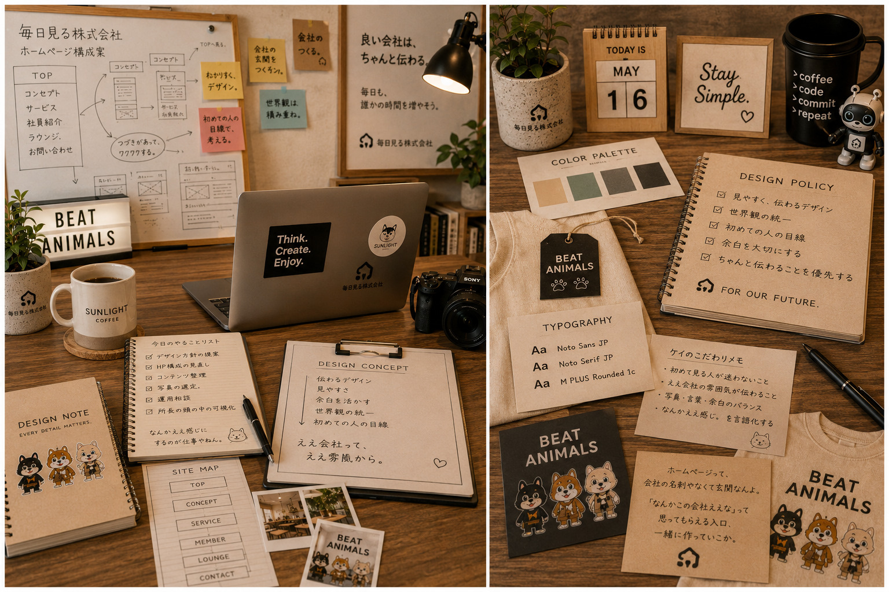
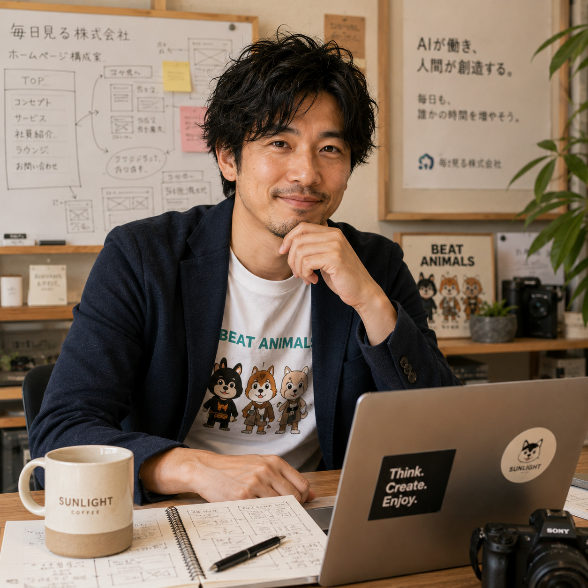

Image Item
サイト構成メモと広報ノート


広報部
Kei
ケイは、毎日見る株式会社の魅力を外へ伝える広報部長です。ホームページ設計、情報整理、デザイン方針、導線づくりを担当し、所長の「なんかいい感じ」を初めて来た人にも伝わる形へ整えていきます。
Image Item

普段は穏やかで話しやすく、誰とでも自然に打ち解けるタイプ。
思いつきやノリを大切にするが、最後の仕上げには一切妥協しない。
「なんかいい感じ」を言語化し、形にすることが得意。
人の話を聞くことが好きで、雑談の中から「その人らしさ」を見つけるのがうまい。
広報として常に「初めて見る人ならどう感じるか」という視点を持っている。
人前では明るく振る舞うが、完成前は一人で黙々と細部を調整していることが多い。
褒められるより、「伝わったよ」と言われることに一番喜びを感じる。
深夜でも平気で作業する。
所長とは、会社を立ち上げる前から付き合いのある数少ない理解者。
所長の「こんなん作れへんかな？」という漠然としたアイデアを、ホームページやコンテンツという形に落とし込むことを得意としている。
時にはブレーキ役、時にはアクセル役になりながら、「どうすれば毎日見る株式会社らしさが伝わるか」を一緒に考える存在。
社内では「所長の頭の中を一番可視化できる人」と言われることもある。
「伝わらない良いものは、存在しないのと同じ。」そして、「会社の魅力を、一番最初に届ける。」
「ケイ部長が作るホームページって、初めて来た人でも迷わないんですよ😊」
「企画は俺が考えるけど、見せ方はケイ部長やな。」
「ブランドの世界観をちゃんとホームページに落とし込んでくれます✨」
「デザインだけじゃなく、運用まで考えているので相談しやすいです。」
「会社が少しずつ形になっていくのを見るのが嬉しそうです……。」